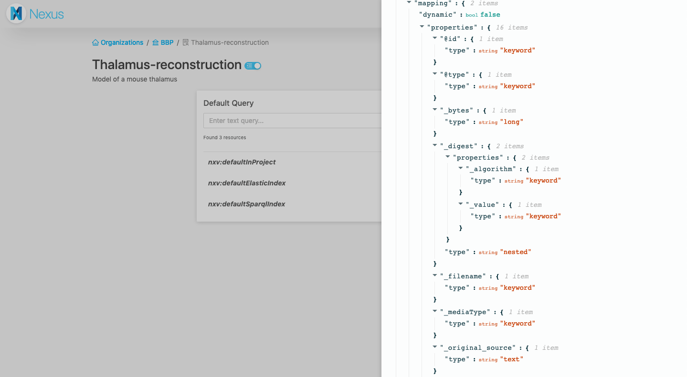

v1.0 Release Notes
This is the first major release of Blue Brain Nexus after almost two years of development.
Also referred to as “Nexus V1”, this initial release is our first big milestone in our quest to build a Knowledge Graph platform uniquely combining flexible graph database, powerful search engine and scalable data store to enable:
- Easy unification and integration of fragmented and disparate data from heterogeneous domains to break data and metadata silos
- Better data governance with the ability to specify and enforce organization’s best practices for data collection, storage and description through high quality metadata
- Data lineage and provenance recording and description
- FAIR (Findable, Accessible, Interoperable, Re-usable) data and metadata management
We’ve been running this software in production for more than a year getting good feedback on its design and we are confident that the current API meets our current and longer term goals.
This release represents a commitment to backwards compatibility in all future releases of the v1.y.z series.
Nexus artifacts are versioned using semantic versioning and while services and web applications that make up Nexus are versioned independently to address specific improvements or bugfixes, their versions are synchronized across minor releases. This means, for example, that services and applications are compatible with each other if their major and minor numbers match regardless of the value of the patch numbers.
The behaviour of the system is described across the documentation, but here are some notable changes from the previous v0.y.z series.
Functionality & Behaviour
Nexus web interface

Previously, the web interface was dubbed Nexus Explorer, and could only be used to browse the data stored in your Nexus instance. For the Nexus V1 release, we decided to build a new web application, called Nexus Web, that also enables operational management, data management and search capabilities on the system. At this stage of development, this application is likely to be most useful to technical users who work on integrating their data into Nexus.
The web application is set to offer most of the features you can get with the raw API, as well as additional conveniences for Nexus users.
At the time of the Nexus V1 release, you can use it to:
- Login into Nexus
- Browse and search organizations, projects and resources you have access to
- See the raw JSON-LD payload of a resources
- Make advanced ElasticSearch and SPARQL queries
- Create, edit and deprecate organizations and projects
- Make a project publicly accessible
- Create resources through an interactive JSON editor
Isolated data scopes
The v0.y.z series handled data within one single space and while it did provide some benefits with respect to the ability to query the entire system, it also provided severe limitations with respect to data evolution, scalability and future developments. We move on from this monolithic approach towards a multi scoped system, where data is bucketed and managed independently in projects.
What we previously referred to as domains are now called projects and represent data and configuration boundaries within the system (we decided to change the naming as we have found that the term “domain” was understood to imply a certain data organization scheme centered around business or scientific domains; this was not intended).
Introducing these boundaries has opened the door to make several performance and functional improvements to the system as follows:
- data indexing can now be configured at the project level without impacting the overall system; we’ve introduced a new resource type View that controls how and where the data is being indexed. They can be managed at runtime by the clients with “administrative” privileges enabling the development of applications specific to the area of interest. An example of that is the BBP Nexus Search application designed specifically to address the needs of the BlueBrain Project.
- indexing processes are now created for each individual project increasing the indexing throughput and allowing the use of distinct indexing targets.
- the uniqueness of a resource within the system was determined by the resource id which comprised of the “organization”, “domain”, “schema” name and version and the resource id. Introducing these data boundaries allowed us to relax this constraint and allow multiple resources to share the same id if they are scoped in different projects.
- access control lists are now restricted to either root (
/), organization (/{org}) or project (/{org}/{project}) removing the need to index these definitions along with the data.
Client defined identifiers
The v0.y.z series was very opinionated on how resource ids are defined and prohibited client provided identifiers. The choice at the time was that a resource id needs to be resolvable (the resource id needed to match the url to access it). This strong constraint tied the resource ids to the Nexus deployment where they were managed. While this was probably fine for most data within the system, it was nearly impossible to manage data from external sources that came with its own identification scheme (e.g. ontologies).
The decision was made to remove this constraint and allow clients to specify their own identifiers. In order to maintain the same API simplicity with respect to accessing resources we came up with a aliasing and curie scheme configurable at the project level (_apiMappings_) that handles bidirectional compaction and expansion of resource identifiers.
A simple http proxying configuration with URL rewriting deployed in front of the Nexus API allows resources to continue to be resolvable.
Resolution mechanisms for shared resources
During the past year of production use of Nexus we have noticed that users tend to develop schemas and contexts as reusable components. An example of that is the Neuroshapes initiative, a community effort for a shared vocabulary and collection of constraints for neuroscience.
The use of schemas and contexts in the v0.y.z series applied a restriction on the locality of constrained resources, specifically resources could only be created in the same domain with schemas.
In the new iteration we’ve introduced a configurable resolution mechanism that allows users to make use of schemas and contexts that reside in other projects. The resources that control this behaviour are called Resolvers and they behave like dependency management systems in programming language ecosystems.
Resolvers can now be created and configured to look up schemas and contexts in arbitrary locations, scoped within projects. The resolution mechanism takes into account all the resolvers defined in a project using the priorities of each resolver and attempts to resolve the referenced resource based on its @id value. Current supported resolvers are:
- InProject: a default project resource created along with a project that looks up referenced resources in the same project.
- CrossProject: a type of resolver that can be created by clients to look up referenced resources in projects other than the current one.
Future developments will include additional resolver types that are capable of resolving resources in other Nexus deployments or shared repositories (e.g.: a git repository).
Schema imports through the owl:imports clause works recursively as before, but it applies the resolution mechanism at each iteration. Context references work recursively as before applying the resolution mechanism at each iteration.
Note: Contexts are no longer handled differently, as special kind of resources. Any resource id can be used as a context reference; the system will resolve the referenced resource and apply only the @context value from its representation to the resource that references it.
Improved handling of binary resources
The v0.y.z series handled binary resources as sub-resources, called attachments, following the model pioneered by CouchDB. While it provided a guarantee that every binary resource is properly described with metadata, the model did not work well in the following situations:
- uploading binaries for later organization: the parent resource required creation before a binary could be attached to it, which in the cases where users were just interested in storing binaries in Nexus it required two API calls instead of one.
- conflicting vocabulary definitions: a lot of the data modeling effort relied on the Nexus metadata for the uploaded binaries which forced the use of a certain vocabulary and metadata structure in Nexus
This model of handling binaries has been superseded by full class support for binaries through files, a new kind of resource managed just like the other types of resources within the system. Files have their own lifecycle and can be independently updated. Description of files, for example in the case of datasets, can now be done external to the file resource within a separate resource. This model allows for many-to-many relationships between files and other resources.
New mechanism for stable resource references
The v0.y.z series was quite opinionated on the use of stable references ensuring the structural and semantic immutability of a resource revision. Schemas and Contexts had to be published before they could be used and once published their lifecycle would finish, preventing further updates.
This behaviour was replaced by giving the client the control on the immutability guarantees through the use of revisions and tags. The schema versions are no longer present in the API and the mechanism for unpacking schema references are aware of possible tag and revision references provided as query parameters. A tag is a new type of sub-resource that represents a pointer to a resource revision.
Assuming the following entry in the project apiMappings:
{
"prefix": "persons",
"namespace": "http://nexus.example.com/schemas/person?tag=v1.0.0"
}
… would ensure that resources are constrained with a stable version of a schema:
curl -XPOST http://nexus.example.com/resources/{org}/{proj}/persons -d '{}'
Additionally, the use of curies is also available, leaving the door open to providing schema versions per resource. Considering the following entry in the project apiMappings:
{
"prefix": "persons",
"namespace": "http://nexus.example.com/schemas/person?tag="
}
… resources can be constrained with a dynamic version of a schema provided at the time of resource creation:
curl -XPOST http://nexus.example.com/resources/{org}/{proj}/persons:v1.0.0 -d '{}'
Revision query params can be used in the exact same manner as tag params. When omitting rev or tag query params when referring to schema, it is implied that the latest version should be used every time that schema is resolved.
Context references follow the very same behaviour. Context iri values can be augmented with a tag or rev query parameter to point to a specific immutable reference of the resource.
Note: the behaviour depends on the new resource reference resolution process; a change in the resolver resources (a different resolution process configuration) can not provide an immutability guarantee of the references.
Client configurable indexing process
As mentioned previously, the indexing processes are now applied at the level of each project and can be customized by the client. Each index process is represented by a newly introduced resource View which has the following classification:
- ElasticSearchView: the process replays the project event log, filters out undesired resources based on configuration, applies minimal data transformation and updates an ElasticSearch index.
- AggregateElasticSearchView: this view does not directly manage an indexing process, but rather represents a collection of referenced _ElasticSearchView_s that would be proxied (queried at the same time) when querying this view.
- SparqlView: the process replays the project event log applies minimal data transformation and updates an RDF store (currently BlazeGraph).
A default ElasticSearchView and a default SparqlView are automatically created along with a project. The default ElasticSearchView is used by Nexus internally to power resource listing.
Since access control lists are now limited to nesting up to the level of a project, these views do not require indexing the acl configuration and can be proxied by the system supporting their native APIs.
_ElasticSearchView_s expose a /_search sub-resource that represents the native API for interacting with ElasticSearch. Client HTTP requests are checked for authentication and authorization and then forwarded to their respective backends. In the case of an AggregateElasticSearchView the requests executed on all the referenced indices.
_SparqlView_s expose a /sparql sub-resource that represents the native API for interacting with the SPARQL endpoint of the RDF store. Client HTTP requests are checked for authentication and authorization and then forwarded to the respective backend.
The previously supported query DSL has been dropped in favour of the direct interaction with the indices via their native APIs. The attempt to provide a general query interface on top of both indices was very ambitious but production use has proven it unsatisfactory. The change gives clients a lot more power in terms of function, flexibility, expressiveness and query optimization. It also opens the door to support additional index backends without having to reconcile them with the query DSL.
Client provided information vs Nexus metadata and vocabulary
Since it was often unclear which information was user provided and which was generated by the system as new rule has been introduced such that:
- all user provided information predicates are kept unchanged
- all Nexus metadata is now presented with a leading
_, example:"_deprecated": trueor"_rev": 4". - the Nexus metadata vocabulary is now namespaced to
https://bluebrain.github.io/nexus/vocabulary/
Technical Notes
IAM service updates
IAM has been redesigned such that it no longer attempts to proxy calls to the configured OIDC provider. Instead, it introduces a new resource type (_Realm_) that represent runtime configuration for the accepted OIDC providers. Based on the well known configuration document of the realm it finds and extracts some of the important provider addresses (e.g. the authorization and token endpoints), the signature keys and the issuer description. This allows for token identification and validation without the need to contact the provider and there’s no need to mediate the interaction with the provider. We therefore dropped the iam integration services as they were not needed anymore.
Now it also expects that group information is present in the access token as a claim, either as an array or a comma separated list of group values.
The service also introduces another resource (_permissions_) as a singleton resource that manages (or enumerates) the permissions that are allowed to be set as values in the ACL definitions.
All IAM resources are now protected from blind writes (also known as lost update problem) by means of the rev query parameter, similar to the other services.
Introduced a new service: Admin
A new service has been introduced, named Admin that manages the scoping (and its configuration) within the Nexus ecosystem. Organizations and Projects (previously named domains) are now managed by this service, allowing other future services to take advantage of the functionality provided without a direct dependency on the KG service. The service dependency tree is now as follows:
+-----------+ +-----------+ +-----------+
| | | | | |
| IAM <---------+ Admin <---------+ KG |
| | | | | |
+-----+-----+ +-----------+ +-+---------+
^ |
| |
+---------------------------------------+
Access control lists are now restricted to either root (/), organization (/{org}) or project (/{org}/{project}) removing the need to index these definitions along with the data in their respective service boundaries.
Introduced Javascript SDK for Nexus

We released a Javascript SDK for Nexus that helps integrating with the Blue Brain Nexus API from Javascript and Typescript code. It aims at giving easy access to all the features offered by the API. It also offers Typescript declarations.
This is the library of top of which the Nexus Web interface is built, but it remains framework-agnostic.
Introduced Python SDK for Nexus
We released a Python SDK for Nexus that helps integrating with the Blue Brain Nexus API from Python. It aims at giving easy access to all the features offered by the API.
Introduced a Command Line Interface (CLI) for Nexus
We released a Nexus CLI that helps interaction with Nexus from the command line. This tool is built on top of the Python SDK for Nexus. It aims at giving easy access to all the features offered by the API and facilitate your data management with Nexus. The use of the CLI is extensively demonstrated in our [Nexus Tutorial].
Migration from v0.y.z series
The semantics of the API and managed resources in between the v0.y.z and v1.y.z series has changed considerably making an automatic migration almost impossible without understanding the structure of the data stored in Nexus. We recommend building a tailored migration script. Please find us on Gitter for help and advice on how to do this effectively depending on your use of Nexus.
Removed of dependency on Kafka
Services have been updated to expose their event logs or subsets via HTTP through Server Sent Events, removing the need to use Kafka as means of service to service communication. It uses the same authentication and authorization mechanism as with the rest of the API, thus ensuring that the information exchanged in guarded by the ACLs defined.
The change reduces the additional operational burden of maintaining a Kafka cluster and also opens up the system for extension as the event logs can be consumed by third party applications in an efficient manner without the need of direct access to the message broker.
In memory indices
Versions v0.y.z of iam and later on admin services depended on ElasticSearch and BlazeGraph to maintain indices of the resources managed. Since these resources easily fit in memory on a single node, the dependency on these external systems has been removed in favour of in memory indices to provide a consistent view on the data and increase the general availability. In between nodes, when services are deployed as a cluster, the indices are replicated by using CRDTs which are natively supported by Akka Distributed Data.